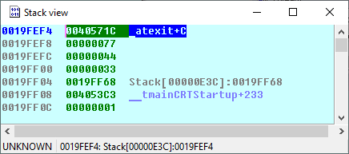
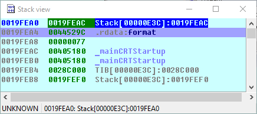
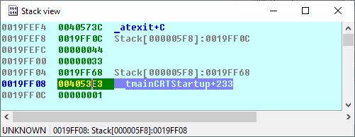
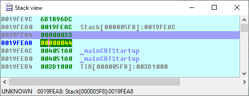
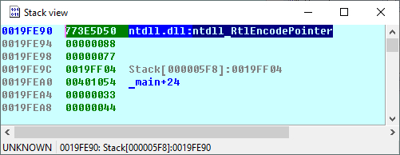

<!DOCTYPE html>
<html>
<head>
	<title>Как работает стек в ОЗУ персонального компьютера</title>

	<meta name="DESCRIPTION" content="Как работает стек в ОЗУ персонального компьютера">
	<meta name="KEYWORDS" content="Как работает стек в ОЗУ персонального компьютера">

<style type="text/css">
body {
	font-size: 24px;
	font-family: "Consolas";
	background-color: #000;
	color: #ffffff;
}

pre {
	font-size: 24px;
	font-family: "Consolas";
	background-color: #ffffaa;
	color: #000;
	width: max-content;
	min-width: 100%;

}

div.my_selected {
	width: 100%;
	background-color: #ffff55;
	position: relative;
}

a:link, a:visited { color: #aaaaaa; text-decoration: none; font-weight: normal;} 
a:active, a:hover { color: #aaaaaa; text-decoration: underline;}

p {
	text-align: justify;
	margin-right: 20px;
}

</style>	
</head>
<body>

<h3>
Как работает стек в ОЗУ персонального компьютера
</h3>

    <p>
        Код программы располагается от младших адресов к старшим, сверху вниз.
    </p>    
    
    <p>
        Стек растет от старших адресов к младшим - снизу вверх.
    </p>

    <p>
        По адресу 19FF08 расположен адрес возврата (скриншот ниже).
    </p>

    <p>
        По адресуу 19FF04 расположен сохраненный EBP (пролог функции).        
    </p>

    <p>
        Далее три заначения 0x33 0x44 0x77, последнее значение это 0x77 результат 0x33 + 0x44 это локальные переменные. 
    </p>

    <p>
        Доступ к локальным переменным через EBP - Var (где Var смещение).       
    </p>

    <p>

        Доступ к аргументам функции (переданными через push) EBP + Arg (где Arg смещение), обычно доступ к первому аргументу EBP + 8 - пропускается сам сохраненный EBP и адрес возврата из функции - это 8 байт, 2 значения по 4 байта.
    </p>

    

    <p>
        Следующий скриншот ниже: 
    </p>

    <pre>

        .text:00401023 push    eax                                  -> более старший адрес памяти
        .text:00401024 push    offset format   ; "%x\n"             -> более младший адрес памяти
        .text:00401029 call    _printf

    </pre>

    <p>
        Перед вызовом printf, в стек сначала ложиться eax т.е. 0x77, потом строка форматировния:
    </p>

    

    <p>
        То есть команда push запихивает значения от старших адресов к младшим - снизу вверх. SP (указатель на стек) растет снизу вверх от старших адресов к младшим, растет при использовании команды push.

    </p>

    <p>
        Когда делается такая операция:
    </p>

    <pre>

        .text:00401003                 sub     esp, 4Ch

    </pre>

    <p>
        До sub значение esp было болшим адресом, после выполнения sub меньшим адресом, т.е. esp сместился снизу вверх - от старших адресов к младшим.
    </p>


<p>
Полный код программы ниже:
</p>

<pre>

.text:00401000 ; int __cdecl main(int argc, const char **argv, const char **envp)
.text:00401000 _main           proc near               ; CODE XREF: __tmainCRTStartup+22Ep
.text:00401000
.text:00401000 ret             = dword ptr -0Ch
.text:00401000 b               = dword ptr -8
.text:00401000 a               = dword ptr -4
.text:00401000 argc            = dword ptr  8
.text:00401000 argv            = dword ptr  0Ch
.text:00401000 envp            = dword ptr  10h
.text:00401000
.text:00401000                 push    ebp
.text:00401001                 mov     ebp, esp
.text:00401003                 sub     esp, 4Ch
.text:00401006                 push    ebx
.text:00401007                 push    esi
.text:00401008                 push    edi
.text:00401009                 mov     [ebp+a], 33h
.text:00401010                 mov     [ebp+b], 44h
.text:00401017                 mov     eax, [ebp+a]
.text:0040101A                 add     eax, [ebp+b]
.text:0040101D                 mov     [ebp+ret], eax
.text:00401020                 mov     eax, [ebp+ret]
.text:00401023                 push    eax
.text:00401024                 push    offset format   ; "%x\n"
.text:00401029                 call    _printf
.text:0040102E                 add     esp, 8
.text:00401031                 mov     [ebp+ret], 77h
.text:00401038                 mov     eax, [ebp+ret]
.text:0040103B                 push    eax
.text:0040103C                 push    offset format   ; "%x\n"
.text:00401041                 call    _printf
.text:00401046                 add     esp, 8
.text:00401049                 xor     eax, eax
.text:0040104B                 pop     edi
.text:0040104C                 pop     esi
.text:0040104D                 pop     ebx
.text:0040104E                 mov     esp, ebp
.text:00401050                 pop     ebp
.text:00401051                 retn
.text:00401051 _main           endp
.text:00401051


</pre>


<p>
Разберем более подробно как работает стек. Ниже код функции main() и дополнительной функции которая вызывается из main().
</p>

<pre>

.text:00401030 ; int __cdecl main(int argc, const char **argv, const char **envp)
.text:00401030 _main           proc near               ; CODE XREF: __tmainCRTStartup+22Ep
.text:00401030
.text:00401030 ret             = dword ptr -0Ch
.text:00401030 b               = dword ptr -8
.text:00401030 a               = dword ptr -4
.text:00401030 argc            = dword ptr  8
.text:00401030 argv            = dword ptr  0Ch
.text:00401030 envp            = dword ptr  10h
.text:00401030
.text:00401030                 push    ebp
.text:00401031                 mov     ebp, esp
.text:00401033                 sub     esp, 4Ch
.text:00401036                 push    ebx
.text:00401037                 push    esi
.text:00401038                 push    edi
.text:00401039                 mov     [ebp+a], 33h
.text:00401040                 mov     [ebp+b], 44h
.text:00401047                 mov     eax, [ebp+b]
.text:0040104A                 push    eax             ; b
.text:0040104B                 mov     ecx, [ebp+a]
.text:0040104E                 push    ecx             ; a
.text:0040104F                 call    ?func@@YAHHH@Z  ; func(int,int)
.text:00401054                 add     esp, 8
.text:00401057                 mov     [ebp+ret], eax
.text:0040105A                 mov     eax, [ebp+ret]
.text:0040105D                 push    eax
.text:0040105E                 push    offset format   ; "%x\n"
.text:00401063                 call    _printf
.text:00401068                 add     esp, 8
.text:0040106B                 xor     eax, eax
.text:0040106D                 pop     edi
.text:0040106E                 pop     esi
.text:0040106F                 pop     ebx
.text:00401070                 mov     esp, ebp
.text:00401072                 pop     ebp
.text:00401073                 retn
.text:00401073 _main           endp


.text:00401000 ; int __cdecl func(int a, int b)
.text:00401000 ?func@@YAHHH@Z  proc near               ; CODE XREF: _main+1Fp
.text:00401000
.text:00401000 d               = dword ptr -8
.text:00401000 c               = dword ptr -4
.text:00401000 a               = dword ptr  8
.text:00401000 b               = dword ptr  0Ch
.text:00401000
.text:00401000                 push    ebp
.text:00401001                 mov     ebp, esp
.text:00401003                 sub     esp, 48h
.text:00401006                 push    ebx
.text:00401007                 push    esi
.text:00401008                 push    edi
.text:00401009                 mov     [ebp+c], 77h
.text:00401010                 mov     [ebp+d], 88h
.text:00401017                 mov     eax, [ebp+a]
.text:0040101A                 add     eax, [ebp+b]
.text:0040101D                 add     eax, [ebp+c]
.text:00401020                 add     eax, [ebp+d]
.text:00401023                 pop     edi
.text:00401024                 pop     esi
.text:00401025                 pop     ebx
.text:00401026                 mov     esp, ebp
.text:00401028                 pop     ebp
.text:00401029                 retn
.text:00401029 ?func@@YAHHH@Z  endp


</pre>



<p>
На скриншоте по адресу 0x19FF08 расположен адрес возврата из функции. По адресу 0x19FF04 расположен сохраненный EBP.
</p>


<p>
Далее в стеке видим число 0x33 по адресу 0x19FF00 и число 0x44 по адресу 0x19FEFC. Эти два значения 0x33 и 0x44 в стек положил следущий код из функции main():
</p>

<pre>

.text:00401039                 mov     [ebp+a], 33h
.text:00401040                 mov     [ebp+b], 44h

</pre>

<p>
Как видим a,b это отрицательные смещения:
</p>

<pre>

.text:00401030 b               = dword ptr -8
.text:00401030 a               = dword ptr -4

</pre>

<p>
Как уже упоминалось доступ к переменным через отрицательные смещения EBP.
</p>




<p>
На скриншоте мы видим два значения 0x33 и 0x44 которые лежат в стеке. В стек эти значения положил код из функции main():
</p>

<pre>

.text:00401039                 mov     [ebp+a], 33h
.text:00401040                 mov     [ebp+b], 44h
.text:00401047                 mov     eax, [ebp+b]
.text:0040104A                 push    eax             ; b
.text:0040104B                 mov     ecx, [ebp+a]
.text:0040104E                 push    ecx             ; a
.text:0040104F                 call    ?func@@YAHHH@Z  ; func(int,int)

</pre>

<p>
Сначала в коде значения 0x33, 0x44 записываются в переменные на стек ebp+a, ebp+b. Затем команда push запихивает в стек сначала значение 0x44 затем значение 0x33 (видно на скриншоте). Видим стек растет снизу вверх - от старших адресов к младшим. Далее в коде вызов функции call. Перед вызовом функции два значения локальных переменных были положены в стек инструкцией push.
</p>




<p>
Далее мы уже находимся в вызванной функции.
</p>

<pre>

.text:00401000 d               = dword ptr -8
.text:00401000 c               = dword ptr -4
.text:00401000 a               = dword ptr  8
.text:00401000 b               = dword ptr  0Ch

</pre>

<p>
Как видим c,d это локальные переменные - к ним доступ через отрицательное смещение EBP. И a,b это аргументы функции - у них положительное смещение 8 и 0xC.
</p>

<p>
Следующий код ложит в переменные на стеке два значения, эти значения видно на скришноте.
</p>

<pre>

.text:00401009                 mov     [ebp+c], 77h
.text:00401010                 mov     [ebp+d], 88h

</pre>

<p>
Ниже на скришноте находтся два значения 0x33, 0x44 которые мы положили в стек ранее был вызов инструкции push перед вызовом функции. Значения 0x77, 0x88 - это локальные переменные.
</p>

<p>
Что бы лучше ориентироватся - в стеке 0x19FEA0 - это адрес возврата обратно в функцию main(). 0x19FF04 это сохраненный EPB (код ниже):
</p>

<pre>

.text:00401000                 push    ebp
.text:00401001                 mov     ebp, esp
.text:00401003                 sub     esp, 48h

</pre>

<p>
Полный код программы на С++ для Visual Studio предоставлен ниже. Соответственно ассемблерный листинг см.выше.
</p>

<pre>

#include &ltstdio.h>

int func(int a, int b)
{
	int c = 0x77;
	int d = 0x88;

	return a + b + c + d;
}

int main(void)
{
	int a = 0x33;
	int b = 0x44;

	int ret = func(a, b);

	printf("%x\n", ret);

	return 0;
}

</pre>

</body>
</html>
